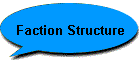
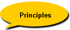
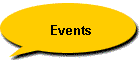

|
All Core Monkeys can be recognized by the distinctive icon associated with them, as well as the Ç behind their character handles.
Monkey:
- Any of various long-tailed, medium-sized members of the order Primates, including the macaques, baboons, guenons, capuchins, marmosets, and tamarins and excluding the anthropoid apes and the prosimians.
Core Monkey(s):
- Chron X player who is a member of the Chron X faction Core Monkeys, carries the icon of a targeted banana and has a Ç behind his character handle.
- The best faction in Chron X, the world's first online collectible card game.
Core Monkey Professional:
- See Core Monkey(s). Core Monkey who has shown considerable proof that he is adept at the game of Chron X.
- An elite group of Core Monkeys who often captain events in interfactional events in place of the council members.
Monkey Council: The Monkey Council lead the Core Monkeys. Faction administrators as well as outstanding members of the faction chosen to be advisors are considered to be in the Council. Their tasks may include but are not limited to official recruitment, decision making, general policy making or acting as General for interfactional events. You must be invited to join the Monkey Council, usually as a replacement for a previous Council member. There are no set requirements to be in the Council, nor does the Council necessarily act continuously.
Current members of the council are: CrashWire, KennethNCP, mootown2, Scrub, Shanedogg
|